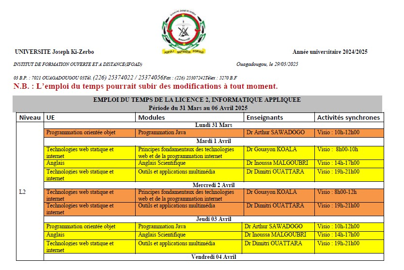
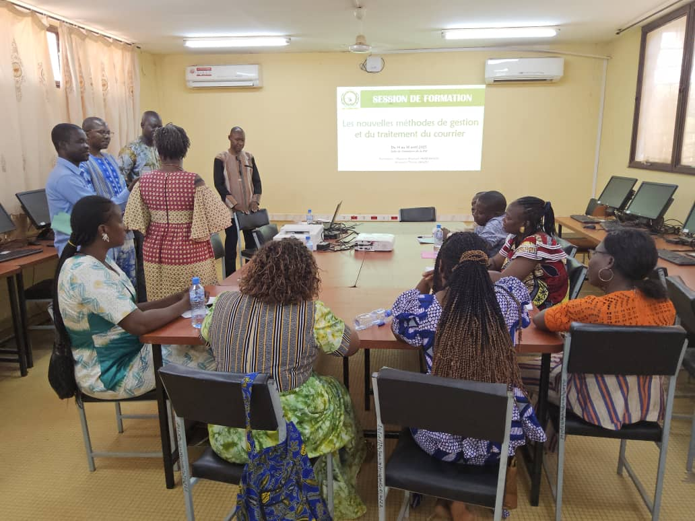
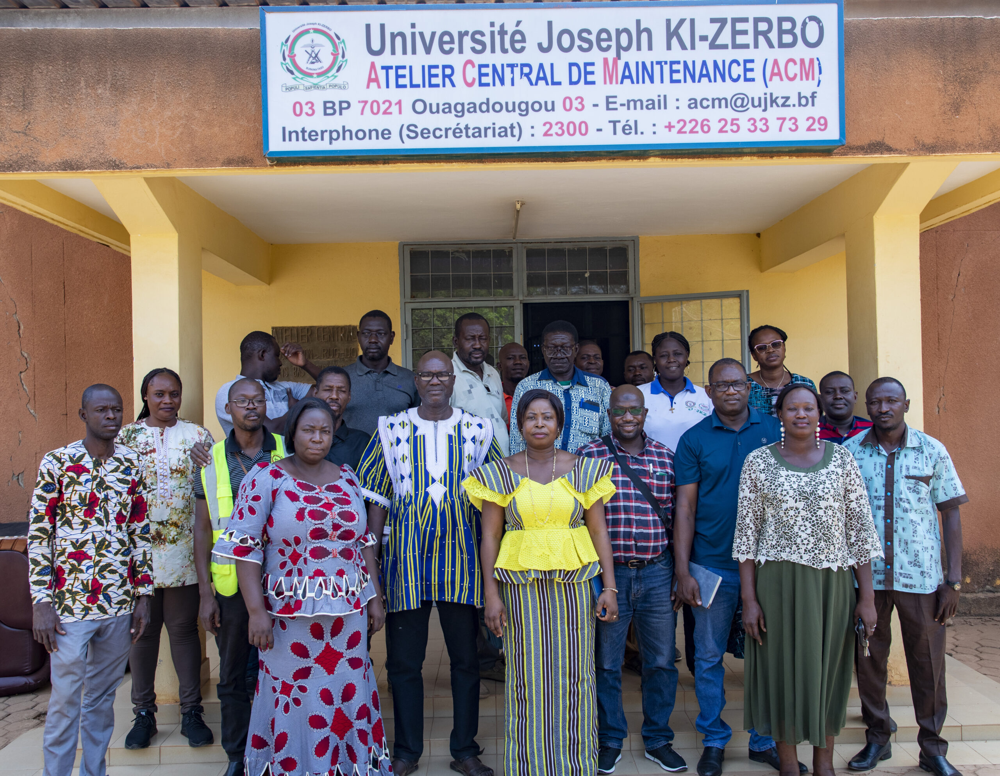

Actualités de l'IFOAD
Informations et événements de l'Institut de Formation Ouverte et à Distance
📅 Programme de la semaine


Atelier sur la gestion du courrier
Du 14 au 18 avril 2025, l'UJKZ a organisé une formation sur les nouvelles méthodes de gestion et de traitement du courrier, visant à digitaliser les pratiques administratives.
Lire plus

Formation des agents de l'atelier central
Du 3 au 7 mars 2025, l'UJKZ a organisé une formation pour une vingtaine d'agents de l'atelier central, renforçant leurs compétences techniques.
Lire plus
Recrutement pour la Licence en Sciences Informatiques Appliquées
L'IFOAD-UJKZ lance le recrutement d'étudiants pour la Licence en Sciences Informatiques Appliquées, une formation en ligne sur trois ans avec deux spécialisations.
Lire plus